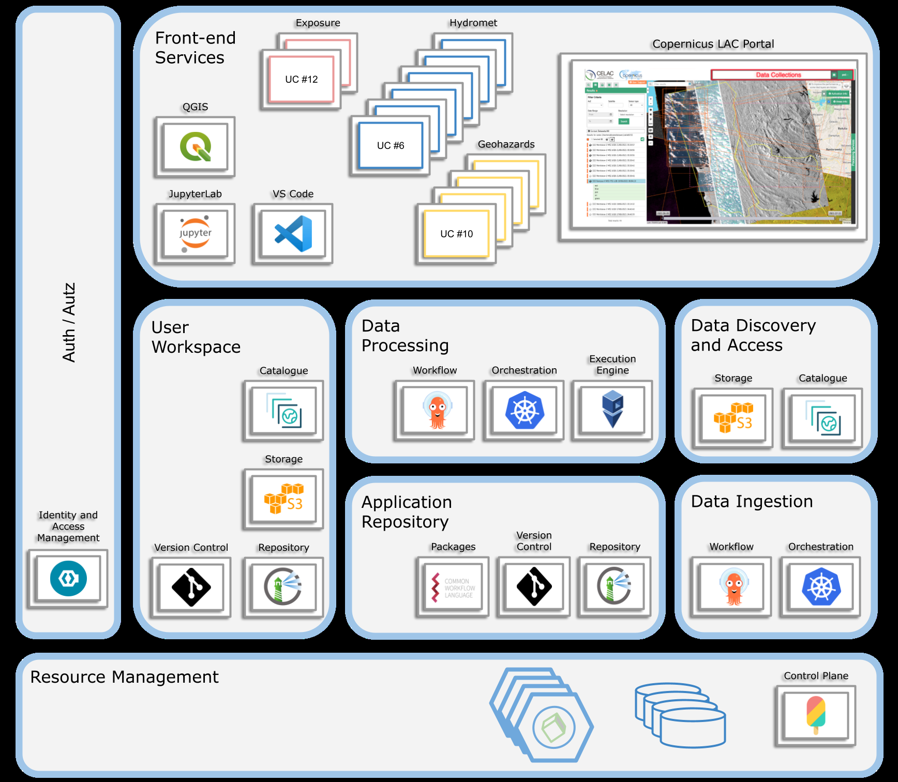

D3 · Interface Control Document · Capítulo 2.1
Overview
Arquitectura distribuida y cloud-native pensada para escalar ante grandes volúmenes de datos y workflows complejos.
pp. 81 fig.
The CopernicusLAC platform is built on a distributed architecture that leverages modern cloud technologies to ensure scalability, flexibility, and resilience. The platform integrates multiple components, each responsible for specific functions within the EO data lifecycle. The architecture is designed to handle large volumes of data and complex workflows, ensuring that users can access and process EO data in a reliable and timely manner.
